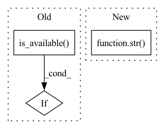

Pattern ID :31591
Before Change
def run_test_locally(fn):
if not torch.cuda.is_available() :
print("skip tests since cuda is not available")
return []
After Change
"LOCAL_WORLD_SIZE": str(nprocs),
"MASTER_ADDR": "127.0.0.1",
"MASTER_PORT": str(find_free_port(8000, 8100)),
"BAGUA_SERVICE_PORT": str( find_free_port(9000, 9100)) ,
}
mp = multiprocessing.get_context("spawn")In pattern: SUPERPATTERN
Frequency: 3
Non-data size: 3
Instances Fragment ID: 92254174
Project Name: baguasys/bagua
Commit Name: a9529bef66e367884316a2b2ebc917ff35bf6334
Time: 2021-08-26
Author: 45031995+wangraying@users.noreply.github.com
File Name: tests/comm/test_communicator.py
M Class Name: AnonimousClass
N Class Name: AnonimousClass
M Method Name: run_test_locally(1)
N Method Name: run_test_locally(1)
M Parent Class:
N Parent Class:
M File Name: tests/comm/test_communicator.py
N File Name: tests/comm/test_communicator.py
M Start Line: 106
M End Line: 122
N Start Line: 115
N End Line: 138
Before Change
pos_triples = pos_triples[indices]
neg_triples = neg_triples[indices]
if torch.cuda.is_available() :
log.info("***Run model on GPU***")
self.kg_embedding_model = self.kg_embedding_model.cuda()
After Change
num_instances = pos_triples.shape[0]
// num_batches = num_instances // num_epochs
log.info("****Run Model On %s****" % str( self.device) .upper())
for epoch in range(num_epochs):
start = timeit.default_timer() Fragment ID: 92254172
Project Name: pykeen/pykeen
Commit Name: 9552a3c91d94b7707de48e6c7d1c552cc165b127
Time: 2018-06-22
Author: ali-mehdi@live.de
File Name: src/utilities/pipeline.py
M Class Name: Pipeline
N Class Name: Pipeline
M Method Name: _train(7)
N Method Name: _train(7)
M Parent Class: object
N Parent Class: object
M File Name: src/utilities/pipeline.py
N File Name: src/utilities/pipeline.py
M Start Line: 84
M End Line: 88
N Start Line: 89
N End Line: 98
Before Change
class TestAsyncModelAverage(unittest.TestCase):
def test_algorithm(self):
if not torch.cuda.is_available() :
print("skip tests since cuda is not available")
return
After Change
"LOCAL_WORLD_SIZE": str(nprocs),
"MASTER_ADDR": "127.0.0.1",
"MASTER_PORT": str(find_free_port(8000, 8100)),
"BAGUA_SERVICE_PORT": str( find_free_port(9000, 9100)) ,
}
mp = multiprocessing.get_context("spawn") Fragment ID: 92254171
Project Name: baguasys/bagua
Commit Name: a9529bef66e367884316a2b2ebc917ff35bf6334
Time: 2021-08-26
Author: 45031995+wangraying@users.noreply.github.com
File Name: tests/torch_api/test_async_model_average.py
M Class Name: TestAsyncModelAverage
N Class Name: TestAsyncModelAverage
M Method Name: test_algorithm(1)
N Method Name: test_algorithm(1)
M Parent Class: unittest.TestCase
N Parent Class: unittest.TestCase
M File Name: tests/torch_api/test_async_model_average.py
N File Name: tests/torch_api/test_async_model_average.py
M Start Line: 62
M End Line: 76
N Start Line: 68
N End Line: 87